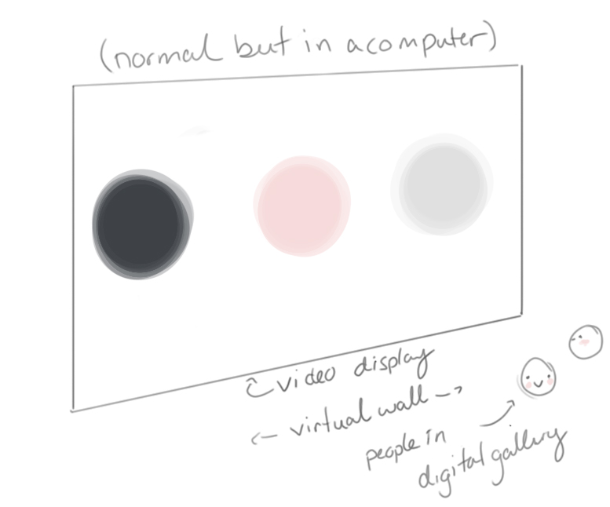

Project Title
Cold Like the Sun
(Meghan Landry)Introduction
This animation very, very loosely responds to modern admiration of all things superficially “natural” and the anti-human, anti-science sentiment stemming from it. The character is not exactly a personification of nature, but more a superhuman idol representative of nature in this context. While fantasy portrayals of characters like these tend to be gentle, wise guardians, this aims to present its character as equally alluring but also detached and uncaring, a perpetuator of life and death, neither good nor evil. There's not much else to say, as much of what is meant to be conveyed is atmosphere and feeling.
Description
The animation will span roughly four minutes and be loopable. All illustrations in the animation will be painted in Photoshop and put into 2.5D motion though a combination of Live2D and After Effects and compiled in Premiere. Project will be created in a pink, dark blue, and light neutrals color scheme, reflective of my own aesthetic preference and of the intended mood of the animation. Music will likely be sampled from several royalty free found tracks and remixed into a song fitting the final animation. The finished work is intended to be visually entertaining for a shallow viewing with more subtle themes and symbolism for a viewer looking for a deeper read.
Location
Work is assumed to be displayed in virtual 3D gallery for the BFA show, but is more at home on public display through a shareable link or embedded in my personal site for continual display until my progression makes the work
too repulsive to show.
If time allows, may decorate space with environment, but video is priority.

Timeline
Work is expected to take the entirety of a semester.
Milestones
March 05: Sketch, Line art, Base colors, & Paint all Assets
March 20: Animate Live2D & After Effects character pieces
April 05: Animate environment
April 16: Composite pieces in Premiere
April 18: Stitch together Music
April 20: Bask in inevitable disappointment at final outcome
Assets
All parts will be painted prior to animation.
Character Model
Full Front to Quarter Rotation Model:
Base Seated and Standing
Winter Garment Standing
Spring Garment Standing
Summer Garment Seated
Bust Only Profile:
Base
Calf to Toe Only Back:
Base
Palms:
Summer Garment
Frame by Frame:
Rising from Snow
Descending into Snow
Creature Models
Goose:
As wings
In flight
Blackbirds:
In flight
Front
Back
Corpses
Pigeons:
Back
Baby bird
Adult
Eggs
Mice:
Side
Quarter
Rabbits:
Gray Behind full, pawing at leg
Gray Front quarter full to emerge from flower
Gray Behind quarter full, walking, leaping
Gray Profile full, resting in arms
Gray White Quarter full, leaping from hands
Fox:
Snout snuffling from leaves
Quarter full behind, leaping
As tail
Wolf:
Full Front descending into snow
Butterflies:
Enough variations to be passable
As amorphous wing
Fireflies:
One repeated variation, simple as possible
Environment
Leaves
Lightning
Clouds
Pool
Snow
Sun
Moon
Stars
Previous Iteration
Done exclusively in After Effects in a short time period, but I feel a better effect can be achieved through use of Live2D for the character and with more time to realize my full intent for the work.
Other work can be found on my personal site >>
Storyboard

Character Design

Reference Images
(Will fiil as working.)Animal References
Plant References
Environment References
Music Clips for Consideration
Artist Info
Bio
I work mostly through digital tools, primarily Photoshop and presently Live2D. I live in the San Jose, California but was born in Maryland and lived most of my life in rural Illinois. I have an associates degree with a focus in art from Spoon River Community College in Canton, Illinois and am a semester shy of my bachelors as a Digital Media Art major at San Jose State University in San Jose, California.
Artist Statement
I am a digital illustrator first, but I love to work with a variety of media, both digital and traditional across 2D and 3D. I’m continually trying to improve my technical skills and searching for new ways to enhance my illustrations and make
them come to life. I specialize in character and creature depictions and designs and more often than not feature them as the subjects of my work.
I often create works that are soft and beautiful with a peaceful, comforting mood as a base and then warp them a little bit with darker or deeper undertones. I think we sometimes might hold our lizard brain in contempt, but I see it as a tool
to drive engagement with more important themes. My mom used to mix medicine with a teaspoon of honey when I was little, and I think that’s the approach I want to take with art, a thick layer of beauty and magic with a little pill of something
to think about.
I keep politics, social issues, and self-expression subtle, but mortality, feminism, and self expression are not uncommon themes underpinning my work. I’m fascinated and terrified by my own and our species’ collective mortality, and I find
art to be an excellent tool to work through the web of ideas around that topic in particular and find a universal means of connection through the discussion of a shared fate.
My current goal as an artist is to work as a character designer, illustrator, or sculptor for games, so a lot of my art is also practice in that pursuit. I find games to be a powerful narrative tool and a way to connect with characters and
ideas and worlds that just hits a little differently than books or film. I have no special goal to exhibit in a gallery or garner notoriety, and I favor the continually and easily available platforms found online for displaying work.
Resumé >>
(link only viewable with SJSU GMail account)
CV not included, nothing to build one out of.